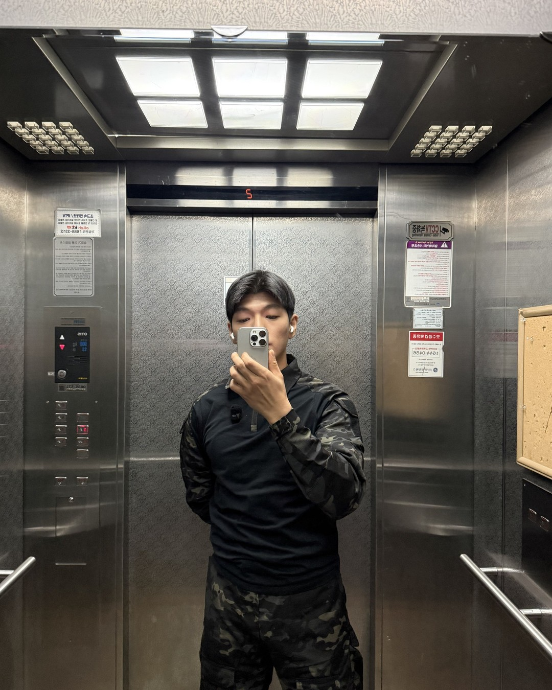
남자가 싸움을 빨리 끝내고 싶을 때
하는 말, 진짜 뜻
("알았어"는 이해했다는 뜻일까요?)
1/14
@mszexc
넘겨보세요 →
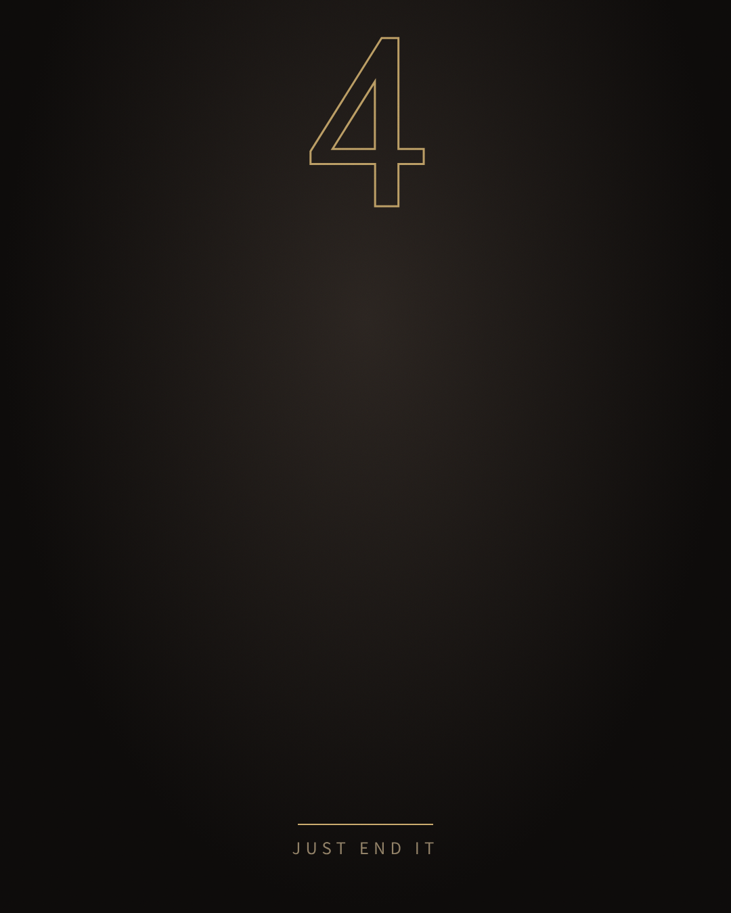
남자는 싸움이 길어지면
이기는 것보다 끝내는 게 급해져요.
(그래서 이런 말이 나와요.)
2/14
@mszexc
남자들끼리 하는 말 #77
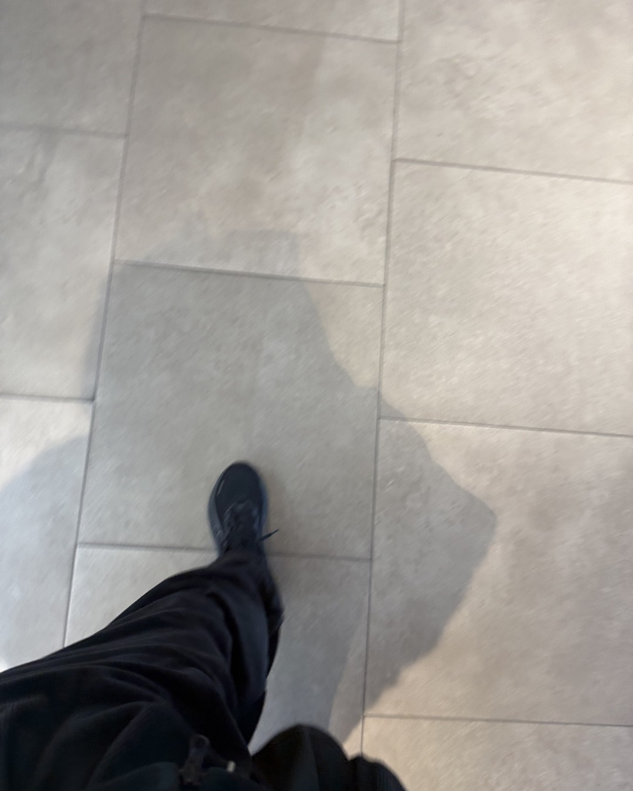
첫 번째.
"알았어, 내가 잘못했어."
(뭘 잘못했는지는 아직 몰라요. 일단 멈추고 싶은 거예요.)
3/14
@mszexc
남자들끼리 하는 말 #77
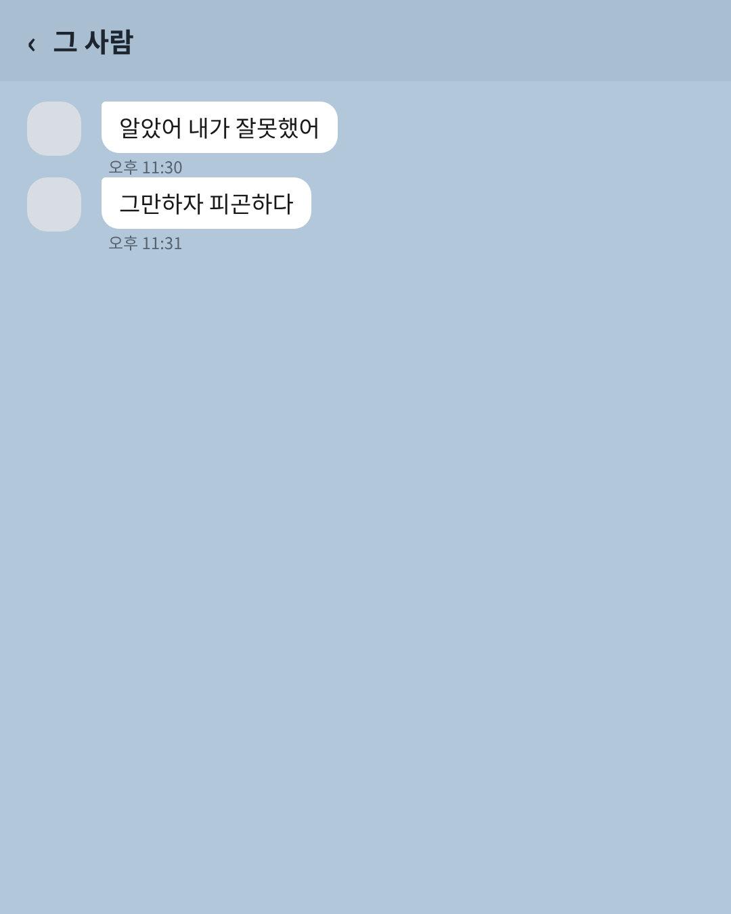
두 번째.
"그만하자. 피곤하다."
(당신이 피곤한 게 아니라, 이 대화가 버거운 거예요.)
4/14
@mszexc
남자들끼리 하는 말 #77

세 번째.
"내일 얘기하자."
(정말 내일 다시 꺼내면, 진심이었던 거예요.)
5/14
@mszexc
남자들끼리 하는 말 #77
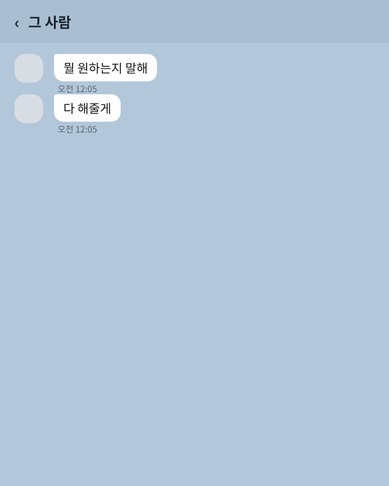
네 번째.
"뭘 원하는지 말해. 다 해줄게."
(해결책을 주고 싶은 거지, 마음을 듣고 싶은 건 아니에요.)
6/14
@mszexc
남자들끼리 하는 말 #77
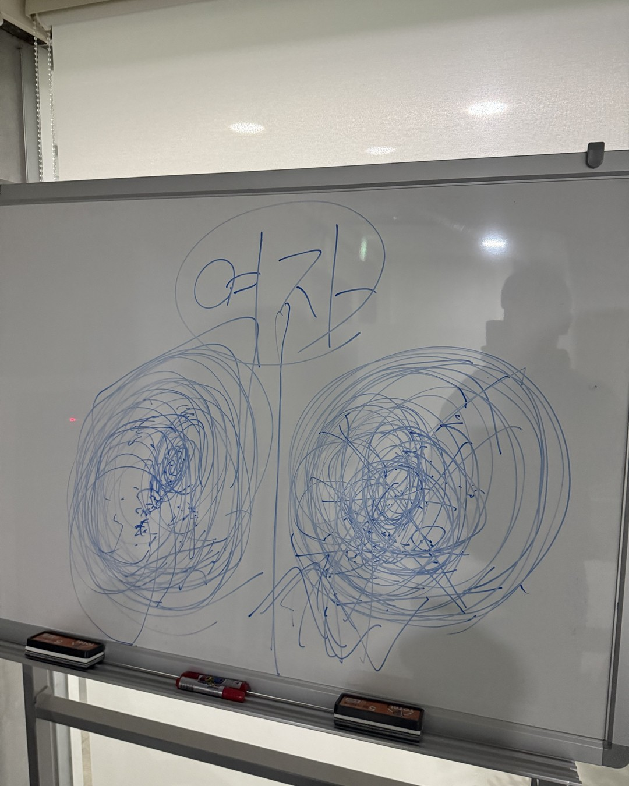
남자들끼리는 이렇게 말해요.
"싸울 땐 그냥 미안하다고 하는 게 제일 빨라."
(빨리 끝난 싸움은, 다음에 또 와요.)
7/14
@mszexc
남자들끼리 하는 말 #77
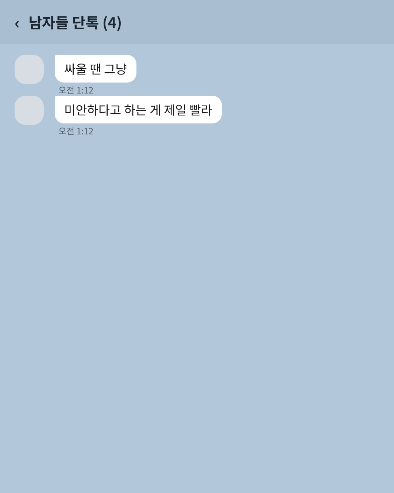
남자가 싸움을 피하는 이유는
말로는 질 것 같아서예요.
(감정 대화는 남자에게 원정 경기예요.)
8/14
@mszexc
남자들끼리 하는 말 #77
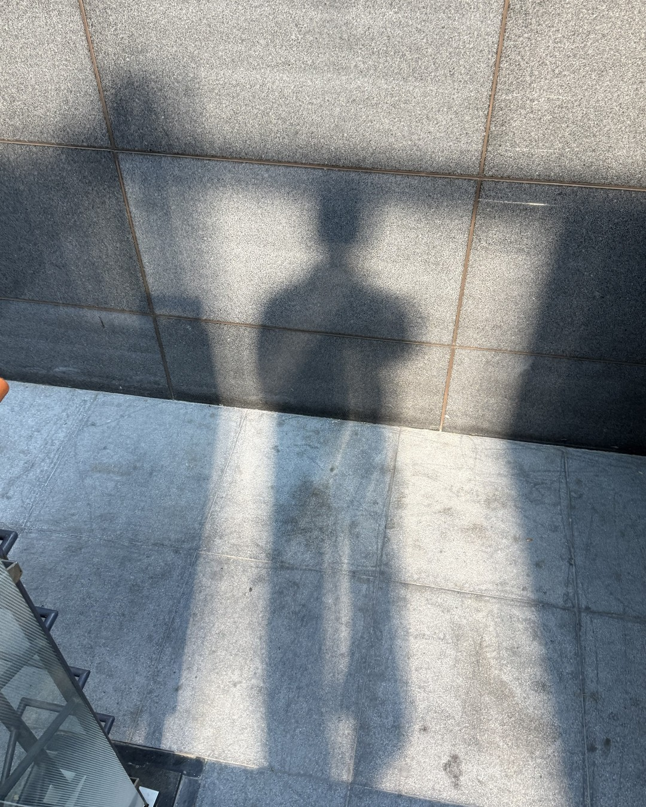
그래서 길게 따질수록
남자는 더 짧게 대답해요.
(짧은 대답은 무시가 아니라, 버티는 중이에요.)
9/14
@mszexc
남자들끼리 하는 말 #77
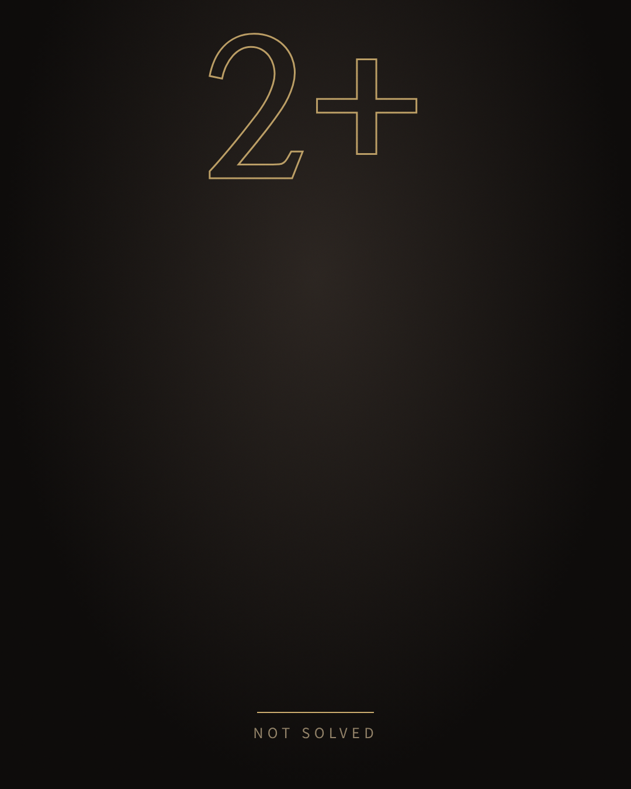
네 개 중 두 개 이상이라면
싸움은 끝났지만, 문제는 그대로예요.
(같은 일로 또 싸우게 돼요.)
10/14
@mszexc
남자들끼리 하는 말 #77
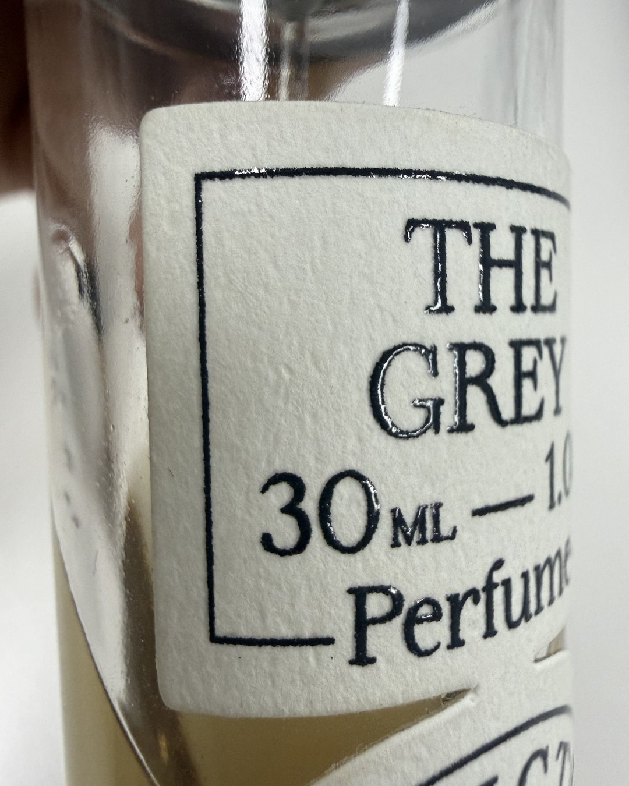
끝내고 싶어 할 땐 이렇게.
"오늘은 여기까지. 대신 이거 하나만 기억해 줘."
(서운한 것 하나만, 짧게.)
11/14
@mszexc
남자들끼리 하는 말 #77
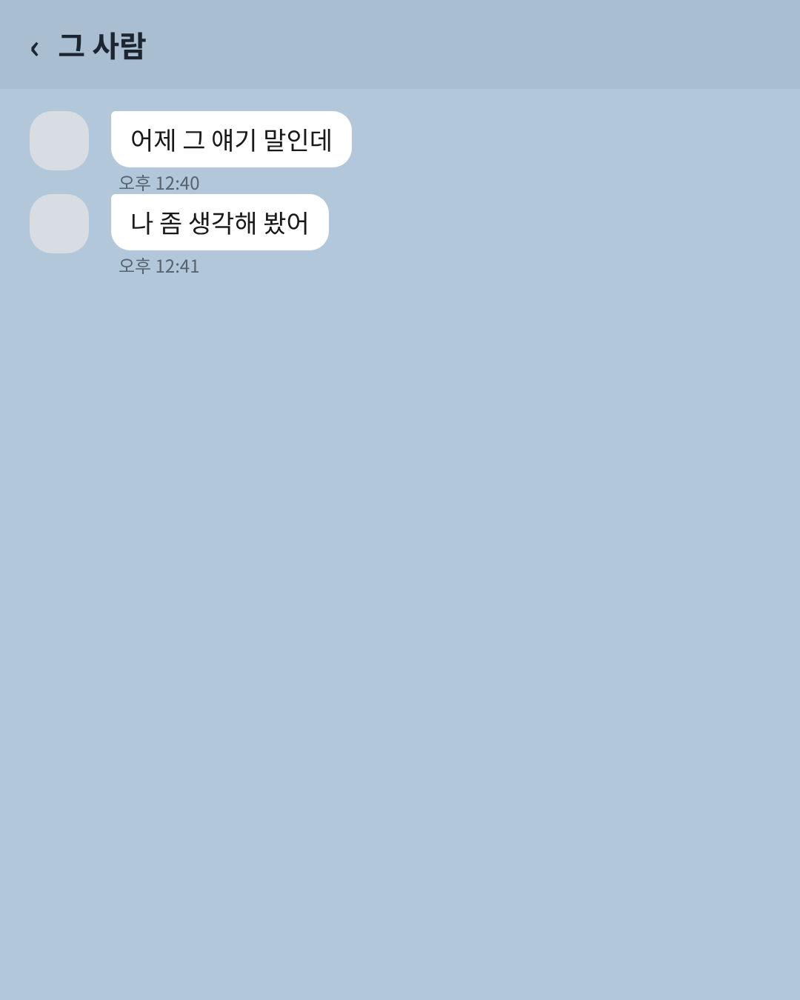
그리고 다음 날
그가 먼저 꺼내는지 보세요.
(먼저 꺼내면, 정말 생각해 본 거예요.)
12/14
@mszexc
남자들끼리 하는 말 #77
빨리 끝난 싸움보다
다시 꺼내는 대화가 관계를 지켜요.
13/14
@mszexc
남자들끼리 하는 말 #77
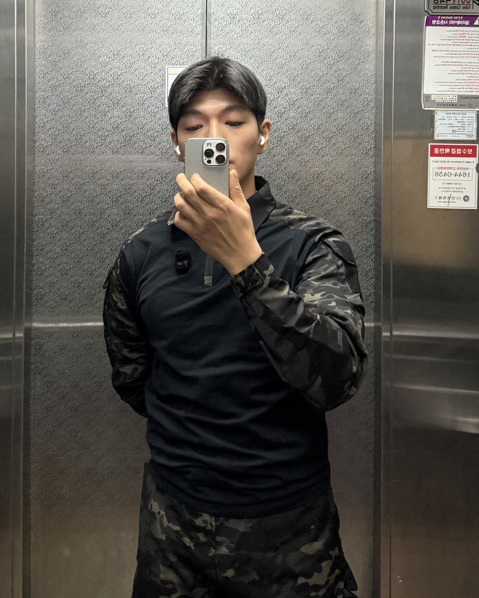
이것만 기억하세요.
남자의 "알았어"는 끝이 아니라, 잠시 멈춤이에요.
남자가 하는 말의 뜻은 전자책 1·2권에 · 프로필 링크에서 무료로 받아보세요
14/14
@mszexc
남자들끼리 하는 말 #77